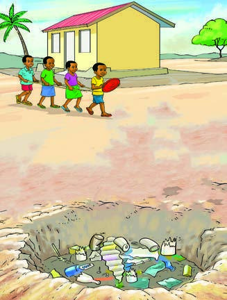
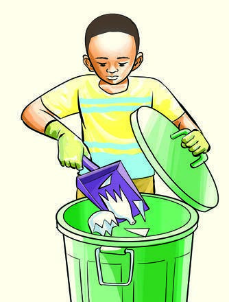

Question


We avoid playing with
I avoid environments
dangerous objects to
with dangerous objects
prevent being injured
by removing objects and
and getting diseases.
disposing them in the
trash bin.

Question
What have you learnt from pictures 1-4?
Activity 3
Walk around the school surroundings and identify dangerous
objects you see. Explain how to avoid them.
Exercise 5
Why are you advised to avoid dangerous objects?